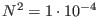
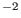
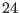
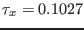
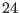
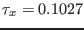
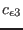
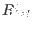
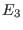
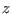

Next: Estuarine dynamics Up: Idealised scenarios Previous: Turbulence under breaking surface Contents
This test case describes three idealised entrainment scenarios as discussed in the review paper of Umlauf and Burchard (2005). These are: wind-driven entrainment into a linearly stratified fluid, wind-driven entrainment into a two-layer fluid, and entrainment in free convection. As in the cases before, the input files for different turbulence closure models are contained in a number of sub-directories. The entrainment test cases is also the first test for the GOTM implementation of the KPP turbulence model described in section 4.35.
For all input files, the default is a linear density stratification
due to a not necessarly linear temperature stratification (because the
equation of state is not necessarily linear). The stratification
corresponds to
 s. Salinity is
constant. Have look into obs.nml to understand how different
types of initial stratifcations can be specified in GOTM. The water
depth is  m, deep enough for the surface induced mixing not
to reach the bed within the  h of simulation. Rotation is
neglected. By default, a constant wind stress of
 Pa
is set in airsea.nml.
m, deep enough for the surface induced mixing not
to reach the bed within the  h of simulation. Rotation is
neglected. By default, a constant wind stress of
 Pa
is set in airsea.nml.
Note, that for all turbulence models, except the Mellor-Yamada model, we set compute_c3 = .true. in gotmturb.nml, which means that the model constant  in (165) (or its counterpart in all other models) is computed from a prescribed steady-state Richardson-number,  (see discussion in the context of (116)). Some more discussion is given in Burchard and Bolding (2001) and Umlauf and Burchard (2005). As pointed out in these papers, it is the value of the steady-state Richardson number (and thus the value of ) that determines the mixed layer depth in almost all shear-driven entrainment scenarios.
To run the Mellor-Yamada model, use the input files in MellorYamada_nml/. Looking at the results you will realize that this model is not at all in accordance with the experimental results of Price (1979) for the entrainment in a linearly stratified fluid. The reason can be traced back to the behaviour of the turbulent length scale in the strongly stratified thermocline. Galperin et al. (1988) suggested to clip the length scale at a certain value to circumvent this problem. Their solution can be activated by setting length_lim = .true. in gotmturb.nml. A second solution has been suggested by Burchard (2001b), who computed the model constant  in (162) from the steady-state Richardson-number as described above. To activate this method, select compute_c3 = .true. (and length_lim = .false. because clipping is not needed any more).
This scenario has been used by us in several publications as a test for vertical mixing schemes, see Burchard et al. (1998), Burchard et al. (1999), Burchard and Petersen (1999), Burchard and Bolding (2001) Burchard and Deleersnijder (2001), Deleersnijder and Burchard (2003), and Umlauf et al. (2003).
The second entrainment scenario discussed in Umlauf and Burchard (2005) is essentially identical to the one just described, however, it starts from a two layer stratification. To use this kind of initial condition, first set analyt_method=2 in obs.nml, and specify the desired temperatures, t_1 and t_2 for the upper and lower layer, respectively. The thickness of the upper layer is z_t1. For a pure two-layer stratification, set z_t2=z_t1, otherwise you will get a linear transition between the upper and the lower layer.
For convective entrainment, you simply need to set the momentum flux, const_tx, to zero and specify an appropriate negative heat flux, const_heat, in airsea.nml, see Umlauf and Burchard (2005).
If you run the KPP-model, some model parameters can be set in the extra input file kpp.nml found in kpp_nml/. With this model, the depth of the mixing layer depends mostly on the value of the critical bulk Richardson number that can also be set in this file. When you work with the KPP-model in free convection, don't forget to check if the pre-processor macro NONLOCAL is defined cppdefs.h (after changes in this file, don't forget to re-compile the whole code!). If NONLOCAL is defined, the KPP model also computes the non-local fluxes of heat (and salinity, if the salinity equation is active). In any case, the -coordinate of the edges of the upper and lower mixing layers are given as zsbl and zbbl, respectively, in the netCDF output file.